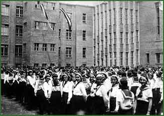

|  | |||
| Construction of the Secondary School of the Jewish Religious Community in Pest began during World War I. The Secondary School for Boys opened in 1919, but teaching only started in the building in 1923. In 1931 the whole building was finished and it was the most up-to-date school of the period in the capital. It provided space for the independent Secondary School for Girls. Upon its completion, the Community inaugurated the complex in June 1932. | |||